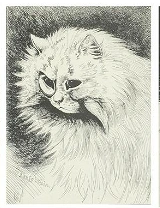

Restoration Begins on "Electrical" Wain Lithographs
Preserving the vibrant and enigmatic later works of Louis Wain.
The ФЭС Foundation is pleased to announce the commencement of a major conservation project focused on a rare collection of Louis Wain's "Electrical Cat" lithographs. These fascinating pieces, emblematic of Wain's later period, are known for their intricate, almost fractal patterns and vibrant, often unsettling, energy.
Unraveling the "Electrical" Period
Wain's "Electrical Cat" series emerged during a time of profound personal struggle and artistic transformation. Scholars have long debated whether these works are a direct visual manifestation of his deteriorating mental state or a deliberate exploration of abstract forms and patterns, possibly influenced by the burgeoning scientific interest in electricity and invisible forces of the era.
Our conservation team, working closely with art historians, will employ state-of-the-art techniques to stabilize the pigments and paper, which have suffered from the ravages of time and past improper storage. The project aims not only to preserve the physical integrity of these artworks but also to shed new light on their historical and artistic context.

A Glimpse into Wain's Complex Mind
The lithographs often feature cats with heightened, almost ethereal, auras, surrounded by intricate lines that seem to pulse with energy. This unique style offers a compelling glimpse into Wain's complex mind, where the familiar feline form was reimagined through a lens of intense internal experience.
"These works challenge us to look beyond the surface, to see not just the cat, but the very fabric of perception itself as interpreted by Wain's extraordinary vision." — Lead Conservator, ФЭС Foundation
Upon completion of the restoration, a selection of these "Electrical Cat" lithographs will be featured in an upcoming exhibition, providing the public with an unprecedented opportunity to engage with this significant, yet often misunderstood, chapter of Louis Wain's artistic legacy.